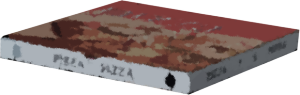

Talk About Dad



"Finally, it's here!"
About an hour later, the pizza arrived.
It had gone well past the scheduled arrival time, and the delivery person gave us no fewer than two free-pizza coupons as an apology.
About an hour later, the pizza arrived.
It had gone well past the scheduled arrival time, and the delivery person gave us no fewer than two free-pizza coupons as an apology.
Originally, they were apparently running a campaign giving away one coupon, to compete with an Italian chef's pizza fair being held at Motoki Station, but the delay piled on top of that: one more.
Lots of high-schoolers under the stay-at-home order were all ordering pizza, and it was pretty rough, the delivery person had said.
Lots of high-schoolers under the stay-at-home order were all ordering pizza, and it was pretty rough, the delivery person had said.
"Woo-hoo! I hardly ever get to order stuff like this! I really splurged!"
Haruka opened the pizza box and twitched her nose happily.
I don't have much of an appetite, but I have to get some nourishment in me now, while my April sickness is lying low. [TN: A pun on gogatsu-byo, 'May sickness,' Japan's term for the May blues.]
Haruka opened the pizza box and twitched her nose happily.
I don't have much of an appetite, but I have to get some nourishment in me now, while my April sickness is lying low. [TN: A pun on gogatsu-byo, 'May sickness,' Japan's term for the May blues.]
"By the way, Haruka, is your stomach okay? It looked like you had a pretty rough time the day before yesterday."
"I'm fine now! It was a little rough until yesterday morning, but by the evening I was all right!"
Yesterday, Haruka had been making the rounds of the food stalls at Central Park with Goto, she'd said.
"I'm fine now! It was a little rough until yesterday morning, but by the evening I was all right!"
Yesterday, Haruka had been making the rounds of the food stalls at Central Park with Goto, she'd said.
"Hey, since we've got this, why don't we invite Goto too? There's the stay-at-home order, but knowing Goto, she's probably not sitting still at home, right?"
"Hmm, yeah. No, but that one would probably eat this whole pizza by herself."
That, from Haruka, was a joke; she picked up her phone right away.
"Hmm, yeah. No, but that one would probably eat this whole pizza by herself."
That, from Haruka, was a joke; she picked up her phone right away.

"Oh, hello, Goto? I'm at my place with Natsumi right now, wanna come over? We've got a Deluxe Pizza too!
Yeah... yeah...
Oh, I see... That's too bad, but it can't be helped."
"Goto, she can't come?"
"Yeah, she says she's got cram school in a bit. She said to keep her company this Saturday or something. Here, Tabasco."
She pushed all the little packets of Tabasco that came with the pizza over to me.
Haruka can't handle spicy food.
"Goto, she can't come?"
"Yeah, she says she's got cram school in a bit. She said to keep her company this Saturday or something. Here, Tabasco."
She pushed all the little packets of Tabasco that came with the pizza over to me.
Haruka can't handle spicy food.

"Can't be helped... But can the two of us eat all of this...?"
The pizza we'd ordered was a large, a pretty tough amount for two girls to eat.
"Hmm, no matter how much I love pizza, this sure is a lot... Munch munch. If Goto's here there's definitely not enough, and if Goto's not here there's definitely leftovers... Mmf mmf. Haha, that one is a real pain to deal with."
Haruka, contrary to her words, was happily stuffing her cheeks with pizza.
The pizza we'd ordered was a large, a pretty tough amount for two girls to eat.
"Hmm, no matter how much I love pizza, this sure is a lot... Munch munch. If Goto's here there's definitely not enough, and if Goto's not here there's definitely leftovers... Mmf mmf. Haha, that one is a real pain to deal with."
Haruka, contrary to her words, was happily stuffing her cheeks with pizza.


"I can't eat any more! A large really was too much."
We enjoyed the pizza to our limit.
Haruka was wrapping the leftover pizza in plastic wrap, as if it were precious.
We enjoyed the pizza to our limit.
Haruka was wrapping the leftover pizza in plastic wrap, as if it were precious.
"Eating it after so long, it really was good!"
I hadn't had an appetite, but once I actually put some in my mouth, that was Deluxe Pizza for you.
The more I ate, the more I wanted, and I couldn't stop.
At the same time, my uneasy feelings vanished somewhere too.
Having a bad dream during my nap was probably because the incident had left such a strong impression.
I hadn't had an appetite, but once I actually put some in my mouth, that was Deluxe Pizza for you.
The more I ate, the more I wanted, and I couldn't stop.
At the same time, my uneasy feelings vanished somewhere too.
Having a bad dream during my nap was probably because the incident had left such a strong impression.
"Sooo, what should we do now..."
Haruka put the pizza away in the fridge and sank deep into the sofa.
"Studying or something, like good high-schoolers?"
"Hey now, give me a break, I'm not Goto..."
"Goto apparently only does her school homework?"
Haruka put the pizza away in the fridge and sank deep into the sofa.
"Studying or something, like good high-schoolers?"
"Hey now, give me a break, I'm not Goto..."
"Goto apparently only does her school homework?"
"But she goes to cram school, right? That kind of thing's not really for me..."
"She goes to cram school for free, too, I hear."
"For free? How come?"
"You see, if it's the cram school Goto goes to, more people will want to go there too, right?"
"Oh, so Goto's their poster child..."
"It's more like she goes because she has no choice. Apparently she's bored out of her mind during lectures."
"She goes to cram school for free, too, I hear."
"For free? How come?"
"You see, if it's the cram school Goto goes to, more people will want to go there too, right?"
"Oh, so Goto's their poster child..."
"It's more like she goes because she has no choice. Apparently she's bored out of her mind during lectures."
Hmm, what should we do to pass the time?

"All right! If it's come to this, time to surf the net!"
"Surfing the net, that's like going back to basics."
"The other day I found an interesting-looking place online! Let's look at it on the map! Hm? Looks like there's progress on the incident!"
"Surfing the net, that's like going back to basics."
"The other day I found an interesting-looking place online! Let's look at it on the map! Hm? Looks like there's progress on the incident!"
"Ah, uh, Natsumi..."
Haruka was looking at me pleadingly.
"Don't mind me, go ahead and look."
Haruka's going out was something I had put a stop to.
I really couldn't tie her down this far, too.
Haruka was looking at me pleadingly.
"Don't mind me, go ahead and look."
Haruka's going out was something I had put a stop to.
I really couldn't tie her down this far, too.
"Thanks!"
Haruka jumped straight to a news page.
"Um, what's this, what's this? The victim in Motoki-cho is believed to be a man, and the entire body's... Huh...?"
I turned my eyes to the screen too, and when I checked what had left Haruka speechless―
Haruka jumped straight to a news page.
"Um, what's this, what's this? The victim in Motoki-cho is believed to be a man, and the entire body's... Huh...?"
I turned my eyes to the screen too, and when I checked what had left Haruka speechless―
The victim in Central Park is believed to be a man.
The skin had been stripped from the whole body.
Summed up, it was something like that.
The skin had been stripped from the whole body.
Summed up, it was something like that.
"This is... rough..."
"Who on earth was killed...? Someone from Motoki-cho, after all...?"
"W-who knows... But, if it's someone from town, identifying them won't take... much... time... maybe... right..."
"Who on earth was killed...? Someone from Motoki-cho, after all...?"
"W-who knows... But, if it's someone from town, identifying them won't take... much... time... maybe... right..."
"Hey, Natsumi, your dad, he's o-okay, right?"
"Yeah, he's gone to Hokkaido right now. Another business trip, he said."
"I see..."
"Hey... don't say scary things..."
"My bad, my bad!"
"Yeah, he's gone to Hokkaido right now. Another business trip, he said."
"I see..."
"Hey... don't say scary things..."
"My bad, my bad!"
Even so, I'm a little worried.
I thought about calling him, too, but he's probably at work right now, so I'll do it tonight.
Dad being away on business reminds me: Haruka's dad is on a posting overseas, away from the family.
I thought about calling him, too, but he's probably at work right now, so I'll do it tonight.
Dad being away on business reminds me: Haruka's dad is on a posting overseas, away from the family.
"Come to think of it, Haruka, where was your dad on his posting again?"
"W-where was it again... I think... somewhere in Europe... Uh, that one, the place with the Natural History Museum and the Eiffel Tower!"
I had a feeling the Natural History Museum was in Britain, and the Eiffel Tower in France, but...
"W-where was it again... I think... somewhere in Europe... Uh, that one, the place with the Natural History Museum and the Eiffel Tower!"
I had a feeling the Natural History Museum was in Britain, and the Eiffel Tower in France, but...
"Really, at least remember the country your own dad lives in!"
"Hahaha... I'm just not good at geography... Geography...? That's it, Chile! My dad lives in Chile!" [TN: chiri, 'geography,' sounds like Chiri, 'Chile.']
"Uh... Chile's in South America. Maybe you mean Paris?"
"Right, right, Paris! It's Paris! The country with the Leaning Tower of Pisa, and the Sagrada Familia!"
At that moment, I made up my mind never to talk geography with Haruka again...
"Hahaha... I'm just not good at geography... Geography...? That's it, Chile! My dad lives in Chile!" [TN: chiri, 'geography,' sounds like Chiri, 'Chile.']
"Uh... Chile's in South America. Maybe you mean Paris?"
"Right, right, Paris! It's Paris! The country with the Leaning Tower of Pisa, and the Sagrada Familia!"
At that moment, I made up my mind never to talk geography with Haruka again...
"But I barely remember your dad, Haruka.
Like, um, wasn't he a pretty big guy?"
"Y-yeah... Let's see. Yeah, w-well, more than big, to put it bluntly, he's a fatso. He's shorter than my mom, too."
What I faintly remember is touching Haruka's dad's belly, squish, squish, and playing together with Haruka.
Yeah, it's gradually coming back to me.
And, if I remember right, around this time of year, we once went to hanami together, too.
"Y-yeah... Let's see. Yeah, w-well, more than big, to put it bluntly, he's a fatso. He's shorter than my mom, too."
What I faintly remember is touching Haruka's dad's belly, squish, squish, and playing together with Haruka.
Yeah, it's gradually coming back to me.
And, if I remember right, around this time of year, we once went to hanami together, too.

Huh? From here on it's hazy, and I can't remember.
"Hey, hey, when we were little, we went to hanami together, didn't we? My family, and yours, Haruka."
"Did... we...? I was little, so I don't remember..."
"Hey, hey, when we were little, we went to hanami together, didn't we? My family, and yours, Haruka."
"Did... we...? I was little, so I don't remember..."
"From around then on, I don't have any memory of your dad, Haruka. Hey, hey, don't you have a recent photo or something?"
"What does it matter!"
Haruka suddenly raised her voice, out of all keeping with the flow of the conversation.
"S-sorry..."
Haruka suddenly raised her voice, out of all keeping with the flow of the conversation.
"S-sorry..."
"I'm going outside for a bit."
With that, Haruka went out by herself.
With that, Haruka went out by herself.
I was left behind by myself, and, not knowing what was going on, could only be dumbfounded.
Haruka almost never takes an attitude like that with me.
Probably, she hadn't wanted her dad brought up.
Maybe, when she says a posting away from the family, it means they got divorced, and she's been hiding it all along...?
Haruka almost never takes an attitude like that with me.
Probably, she hadn't wanted her dad brought up.
Maybe, when she says a posting away from the family, it means they got divorced, and she's been hiding it all along...?
But Haruka's surname hasn't changed, after all.
Or else, he's actually already passed away?
But that's not something to hide...
Surely not, he committed a crime and is serving time?
Or else, he's actually already passed away?
But that's not something to hide...
Surely not, he committed a crime and is serving time?
―I think of this and that, but nothing comes to mind.
At times like this, if I asked Goto, she'd give me a hint, but that would really be tactless.
After all, this is when I should probably talk properly with Haruka.
Haruka, will she answer my call...?
At times like this, if I asked Goto, she'd give me a hint, but that would really be tactless.
After all, this is when I should probably talk properly with Haruka.
Haruka, will she answer my call...?


Huh?
Haruka's phone. It seemed she'd rushed out without even taking her phone.
Haruka's phone. It seemed she'd rushed out without even taking her phone.


I stared at the two brand-new phones sitting on the table.
Now then... where would Haruka have gone?
If we missed each other, that would be bad, so I'll leave Haruka's phone here.
The house key, I can just put it in the mailbox at the apartment building's entrance or something.
It has a code lock, so outsiders can't open it.
Now then... where would Haruka have gone?
If we missed each other, that would be bad, so I'll leave Haruka's phone here.
The house key, I can just put it in the mailbox at the apartment building's entrance or something.
It has a code lock, so outsiders can't open it.
The house key...
Yeah, this is it. It was hanging on a hook by the kitchen.
Haruka, if she went by bike, would probably be at Central Park; on foot, the convenience store.
If her bike is in the bike parking area, I'll head for the convenience store.
If her bike is in the bike parking area, I'll head for the convenience store.
Straight from the kitchen, I headed for the entryway.
Read ✓ Next in this arc →